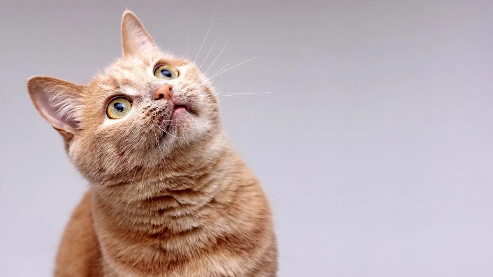

Bienvenidos a Patitas Felices
Una tienda pensada con amor para mimar a los michis que mas queres 🐱💖
Conocé nuestro propósito
En Patitas Felices creemos que los gatitos son parte de la familia. Nuestra misión es crear un espacio donde humanos y michis encuentren productos que generen bienestar, cariño y diversión. Cada artículo fue pensado con amor, responsabilidad y mucha ternura 🐾💖

Descubrí más